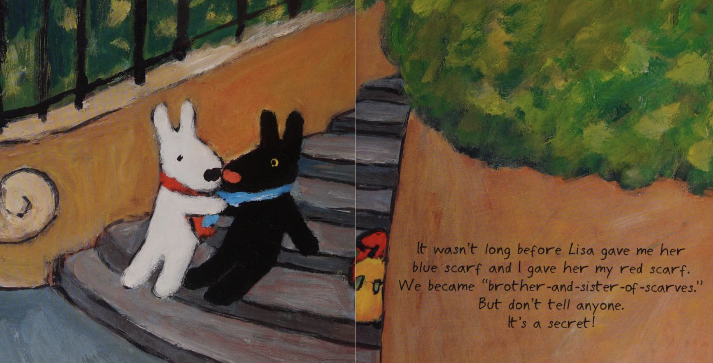
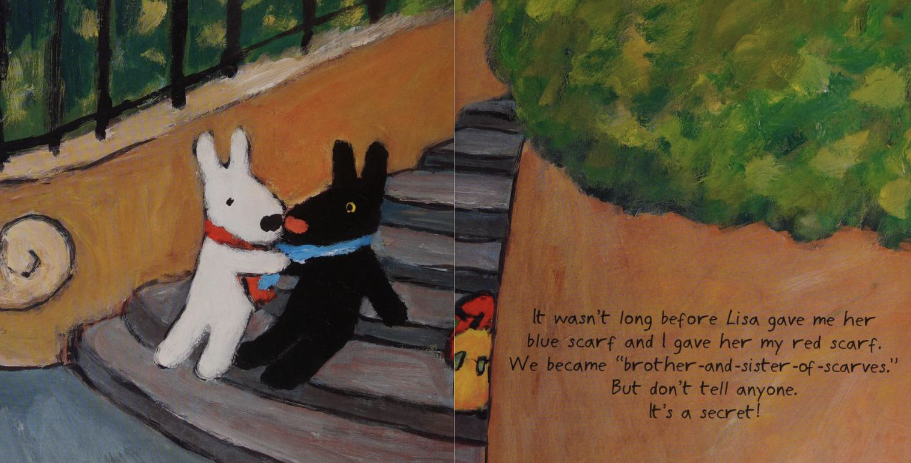

Gaspard and Lisa, Friends Forever
Modeling / Rigging / Animation / Brushstroke Tools
Lately, I've been fascinated by the challenge of translating traditional illustration styles into 3D. With the release of Blender's Brushstroke Tools, I saw an opportunity to experiment and develop a look that stays true to its original artwork. For this project, I set out to recreate Georg Hallensleben's distinctive painterly style from Anne Gutman's children's book, Gaspard and Lisa, Friends Forever.
 

To begin the project, I blocked out the environment using the original painting as a reference. Since the brushstrokes would later be layered on top of the geometry, my focus was on capturing the general shapes rather than creating a perfectly subdivided, high-detail environment.
I then applied brushstrokes on top of the environment and introduced an HDRI to better match the lighting and atmosphere of the reference painting. Using the Brushstroke Tools controls, I went through multiple iterations, adjusting stroke appearance and refining their placement. While it took trial and error to replicate the expressive texture of the original illustration, this process taught me a lot about fine-tuning stroke settings to achieve a convincing hand-painted look.
One of the biggest challenges was managing the high density of brushstroke cards, which made Blender unstable. Rendering frequently caused crashes, forcing me to find a balance between adding strokes, tweaking parameters, and optimizing the scene for performance. This iterative workflow pushed me to think more strategically about both artistic fidelity and technical efficiency.
I 3D modeled a base mesh for Gaspard and Lisa and then applied brushstrokes onto two versions to bring Gaspard and Lisa to life.
While Brushstroke Tools works well on static meshes, rigging a character while maintaining the painterly look was a different challenge. Since the brushstrokes exist as separate geometry from the base mesh, rigging the mesh alone wasn't enough. I needed a way to deform both the rig and brushstrokes in sync without breaking the illusion of hand-painted strokes.
To solve this, I made a cage-based deformation system that allowed the brushstrokes to move naturally with the character. The process involved:
- Converting the brushstroke cards into a mesh
- Building a low-resolution cage around the brushstroke mesh to control deformation
- Weight-painting the cage for smooth movement
- Parenting the cage to the rig so it would drive the brushstroke mesh
This setup ensured that only the brushstroke mesh contributed to the final appearance while maintaining the integrity of the strokes.
I constantly switched between refining the rigs and positioning Gaspard and Lisa in the scene, as posing them often revealed new rigging issues that needed fixing. Once the characters were placed correctly and I animated the camera, I encountered another major challenge: the brushstrokes flickered when the camera moved. To resolve this, I had to modify the environment by identifying and deleting overlapping brushstroke cards, ensuring a more stable and visually consistent result.